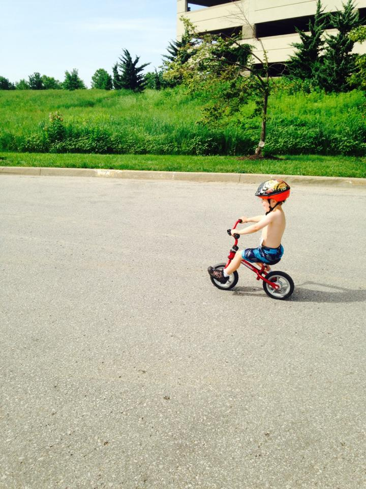
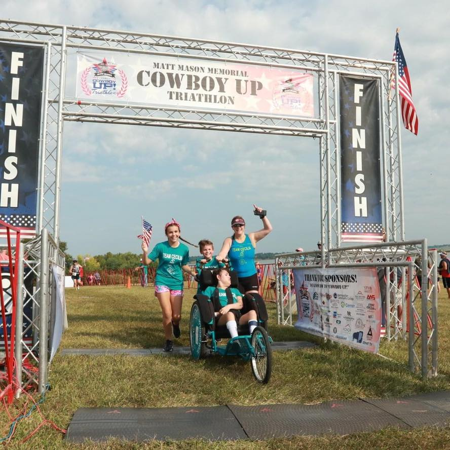
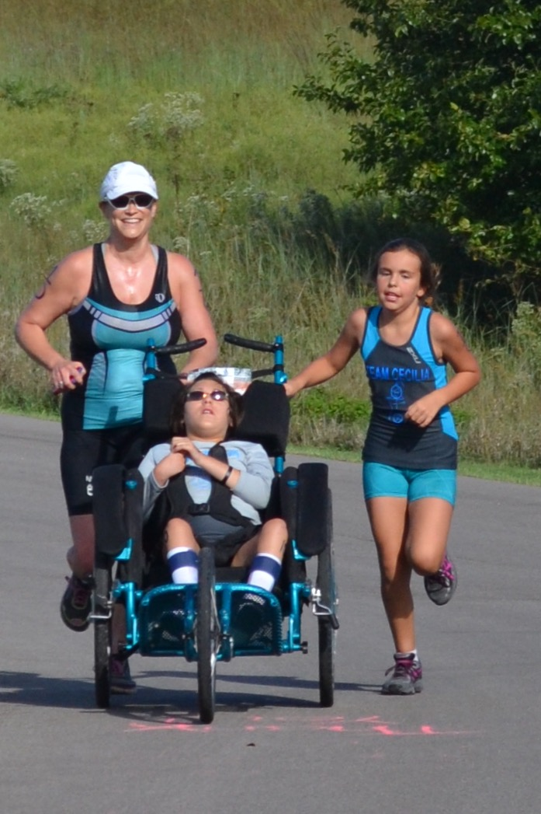
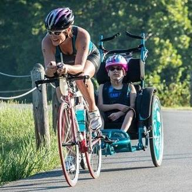

★ Review of KC Metro Triathlons
JCC Indoor Triathlon

⚙This race takes place indoors at the Jewish Community Center in Overland Park, KS. The swim is in the indoor pool. The bike is on a Keiser stationary bike. The run is on the indoor track. It offers three distance categories: Youth Super Sprint, Super Sprint, and Sprint.
Kansas City Triathlon
⚙This race takes place at Longview Lake in Kansas City, MO. It offers both Sprint and Olympic distance triathlons, Olympic distrance triathlon relay, and both Sprint and Olympic distance duathlons. The bike course is out on the roads around the park and are closed to traffic. It is made up of rolling hills. The run course is within the park on a flat, gravel trail.
Jewish Community Center Youth Triathlon
⚙This race takes place at the Jewish Community Center in Overland Park, KS. Distances are based on age. Kids that are race age 6-9yo swim in the indoor pool, while kids that are race age 10-17yo swim in the outdoor pool. The bike course is completely on the Sprint/T-Mobile campus and closed to traffic. The run course is completely on the JCC campus and is closed to traffic. For kids race age 4-5yo, there is a Tri for Tots. The swim can include swim aids, such as life jackets, floaties, etc and can be walked (2 laps in the zero entry shallow pool) or swam (25yrds), including with the assistance of a lifeguard. Once leaving the pool, a parent may run along side their child as the finish the rest of the race. The bike course is completely on the JCC campus and closed to traffic. All self-propelled wheeled ride on "bikes" are permitted in this race (ie glider bikes, bikes with training wheels, big wheels, and trykes.) The run is completely on the JCC campus and closed to traffic.
Shawnee Mission Park Triathlon

⚙This is the oldest triathlon in the Kansas City metro. It takes place in Shawnee Mission Park in Lenexa, KS and is completely closed to traffic. There are four distance categories: Super Sprint, Sprint, Long, and Olympic. There is also a duathlon. All races and distances have relay team options. The bike is very challenging with several steep and long hills. One hill in particular is called the "Dam Hill" as it has a particularly steep incline as you come over the lake's dam. Depending on the distance, there are multiple laps within the park's 4.5mile loop. The run course includes paved park roads, paved park trails, and has rolling hills with a couple steep ones, including the Dam Hill. The finish line is at the top of a hill.
North Kansas City YMCA Youth Triathlon

⚙This race takes place at the North Kansas City, MO YMCA and offers several distances, race types, and options for all youth ages. The course is closed to traffic. There is a Tri for Tots for ages 1-6. The swim course is wading in the pool. Any self propelled sit on wheeled bikes or trykes can be used (including gliders, bikes with training wheels, etc.) There is a noncompetive division for 4-14year olds that allows swim aids. The competitive division is for race ages 14years old and younger and the distances are age-based. There is also an Aquathon option for race ages 7-14year olds.
WIN for KC Tryathlon

⚙This is an all women's race that takes place at Sailboat Cove at Smithville Lake, MO. Over 50% of the participants are first time triathletes. The triathlon offers super sprint and sprint distance categories and can be raced individually or as a relay team. There is a sprint duathlon, as well as an aquabike. The bike course is on the rural paved roads around the park and are not closed to traffic (although there is very sparse traffic.) There are gentle rolling hills on this out and back bike course. The run is a flat, out and back course on paved trails.
Matt Mason Memorial Cowboy-Up! Triathlon
⚙This race is at Smithville Lake, MO. This triathlon is to honor American fallen heroes and got its namesake from a local Navy Seal hero, Matt Mason, who often dared his non-athletic friends to "Cowboy-Up" and join him in a triathlon. The proceeds of the race go towards scholarships at his Alma Mater, Northwest Missour State. There are Parachute Jumpers flying with the US flag, a 21 Gun Salute with Honor Guard, and a cannon to start the race. This race has both a sprint and long distance category, and has added a Collegiate division. There is also a Kids' Fun Run. The bike course is on rural, paved roads outside of the park and includes rolling hills. The run is flat and out and back on paved park trails. Matt's parents adorn participants with a medal after they cross the finish line.
Kill Creek Park Triathlon
⚙This race takes place at Kill Creek Park in DeSoto, KS. It formerly was an all women's triathlon, but in recent years became co-ed. There is a sprint triathlon and duathlon, and both can be raced individually or as a relay team. The bike course is outside of the park on rural, paved roads and is not closed to traffic (although traffic is sparse.) The course is mostly flat with some false flats and two long, steep hills on the last mile. The run is mostly flat on paved park trails.
JCPRD Kids Triathlon
⚙This race takes place at Kill Creek Park in DeSoto, KS. The entire race is within the park and is closed to traffic. Distances are based on race age. The swim in an open water swim, however close to shore within the swim beach buoys. Depending on the age of the participant, the swim includes participants swimming laps in a semi circle, where they get out and run in the sand to swim start between the laps. There are life guards forming the semi-circle standing elbow to elbow on both sides of the entire swim course. The bike course has a long hill. It takes place on the paved park roads and depending on the age of the participant, may include multiple laps. The run is a flat out and back on paved park trails. There is also a tot tri for kids 5 years old and younger. A parent must accompany their child the entire course. The swim is splashing in the lake and swim aides are allowed. The bike course is out and back on paved park trails. The run is a short out and back.
Jeremy Katzenberger Memorial Triathlon

⚙This race takes place at Weatherby Lake, MO to honor Jeremy Katzenberger, a fallen soldier that grew up there. The race offers both a short and long distance triathlon. The long distance can be raced as an individual or team. There is a family team division. Additionally there is an Aquabike race. The bike course is fast and technical with rolling hills and lots of turns. The run course has rolling hills and is through the lake's surrounding neighborhood.
Lake Quivira Triathlon
⚙This sprint triathlon takes place on the Saturday of Labor Day weekend and is put on by the residents of and takes places completely within the gated community of Lake Quivira, KS. The lake is one of the nicest in the metro and the entire course is scenic. The bike course is two loops on the mostly flat, paved roads around the lake. There is one very steep hill. The run is mostly flat and out and back on the paved road around the south side of the lake. Participants can race as individuals or as a relay team.
Lake Olathe Triathlon
⚙This sprint triathlon takes place at Lake Olathe. It is a very scenic and challenging, hilly course.